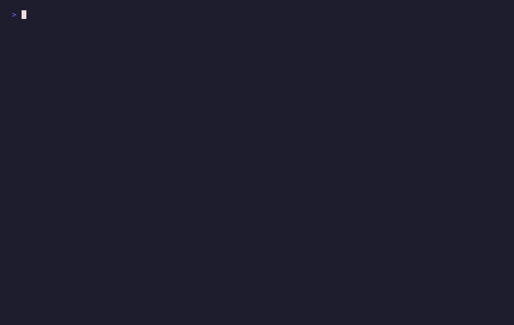

Keep API keys out of your Claude Code prompts.
Paste a key into Claude Code and it's sent to the API and written to your session transcript. Keyward catches it first — saving the secret to a chmod 600 file, blocking the prompt, and re-submitting a sanitized version automatically.
Secrets never reach the model.
Keyward registers a UserPromptSubmit hook — the one point that runs before your message is sent to Claude. Every prompt is scanned, and any API key is intercepted on the way out.
Scan every prompt
Regex for ~20 providers (Anthropic, OpenAI, GitHub, AWS, Stripe, Google…), explicit /key markers, and an optional gitleaks pass.
Save & stop the leak
The value is written to ~/.claude/secrets/ at chmod 600 and the original prompt is blocked — it never hits the API or the transcript.
Sanitized, automatically
A cleaned prompt is pasted and sent for you, with the key replaced by a <<secret:…>> reference. You press Enter once.

It knows what a key looks like.
Around twenty provider formats are caught with no marker needed. Anything custom, you tag with /key name=value. Example/placeholder values are ignored, so you can still talk about key formats freely.
Built for the keys you paste.
Most tools for keeping secrets out of Claude Code stop the agent from reading your .env files, or live in the browser. Keyward covers the other vector — the credential you type or paste into the chat yourself.
Keyward
- Intercepts keys you paste into the prompt
- Auto re-submits a sanitized message
- Saves the secret so Claude can still use it safely
- Cross-platform: macOS, Linux, Windows
- MIT, no network calls, no telemetry
Other approaches
- sensitive-canary — also a UserPromptSubmit hook; blocks sensitive prompts and .env reads
- nopeek · cc-redact — redact secrets when Claude reads files
- Browser extensions — catch pastes in the web UI, not the terminal
- Proxies / 1Password CLI — keep keys out of reach entirely
A full side-by-side comparison lives in the project wiki. Keyward is defense-in-depth, not a replacement for a real secret manager — see the honest security model.
Two lines, then restart.
In a Claude Code session:
On macOS, grant your terminal Accessibility permission so the auto-paste can run. On Linux install xdotool/wtype for your display server. Prefer reading the code first? Clone & symlink — full per-platform guide.
Straight answers.
Does the API key still get sent to Anthropic?
No. The UserPromptSubmit hook runs before the prompt is sent. Keyward blocks the original message containing the raw key and re-submits a sanitized version, so the model and the API only ever see a <<secret:…>> reference.
How does Keyward keep secrets out of Claude Code?
It scans every prompt with regex for about twenty provider formats plus an optional gitleaks pass. When it finds a key it saves the value to a chmod 600 file in ~/.claude/secrets/, blocks the prompt, and auto-pastes a sanitized version that references the file instead of the value.
Can Claude still use the key after it's saved?
Yes. A bundled skill teaches Claude to read the saved secret inline in a single shell command — export VAR=$(cat ~/.claude/secrets/x.txt) && cmd — so the value flows from disk into the process environment, never through stdout or the model's context.
Which platforms are supported?
macOS, Linux (X11 and Wayland), and Windows. The sanitized re-paste is automated per platform via osascript, xdotool, wtype, or PowerShell SendKeys. On unsupported setups you can paste manually with KEYWARD_DISABLE_PASTE=1.
Is it safe to trust a security tool with my keys?
Keyward is MIT-licensed, makes no network calls, has no telemetry and no dependencies beyond Python and your OS. Secrets are stored as chmod 600 plaintext — the same trust model as ~/.aws/credentials or a .env file. It's defense-in-depth, not a replacement for a real secret manager. The wiki documents exactly what it does and does not protect.